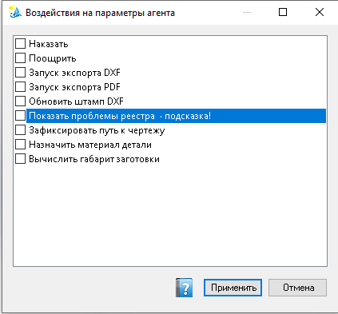

Воздействия оператора с пульта
Набор действий оператора с пульта, которые можно подать помощнику через панель «Агент» (блок «Прямое воздействие»). Часть воздействий нельзя включить одновременно — такие строки недоступны, пока конфликт не снят.
Как открыть
Панель «Агент» → «Прямое воздействие» → ….

Список воздействий с флажками; подсказка по текущей проблеме помечается суффиксом «· подсказка!» и подсветкой. Внизу — кнопка справки, Отмена и Применить.
Когда пользоваться
Когда помощник запущен (Старт) и нужно быстро задать тон или запустить типовое действие, без длинного текста в поле сообщений. Если включён режим наблюдения в настройках, воздействия с пульта не меняют поведение — сначала снимите этот режим.
Элементы окна
- Список с флажками — каждое воздействие можно включить или выключить. Набор берётся из профиля помощника (данные ISIDA в
%ProgramData%\VELUM); состав строк может отличаться от примера на скриншоте. - Подсказка — строка с текстом «· подсказка!» и тёплой подсветкой: ядро предлагает её по текущей проблеме. Флажок сам не ставится — отметьте вручную, если согласны.
- Заблокированные (серые) строки — антагонисты уже выбранных воздействий; включить нельзя, пока не снят конфликт. Подсказка на строке поясняет причину.
- Применить — передать отмеченный набор на панель «Прямое воздействие» и закрыть окно.
- Отмена — закрыть без изменения выбора на панели.
- Кнопка справки (иконка) — этот раздел.
Типичные воздействия (пример)
В рабочем профиле часто встречаются, например:
| Воздействие | Смысл |
|---|---|
| Наказать / Поощрить | Оценить последнее поведение помощника (негатив / позитив). |
| Запуск экспорта DXF / PDF | Инициировать соответствующий сценарий экспорта. |
| Показать проблемы реестра | Открыть сводку проблем реестра документов. |
| Зафиксировать путь к чертежу | Закрепить путь к связанному чертежу в учёте. |
| Назначить материал детали | Запустить сценарий назначения материала. |
| Вычислить габарит заготовки | Запустить расчёт габарита заготовки. |
Порядок работы
- Отметьте нужные пункты флажками.
- Если нужная строка серая — снимите конфликтующее воздействие и повторите.
- Нажмите Применить.
Воздействия действуют при запущенном цикле помощника и выключенном режиме наблюдения. Если после применения «ничего не происходит», см. «Почему действие с панели не сработало» на странице панели «Агент».